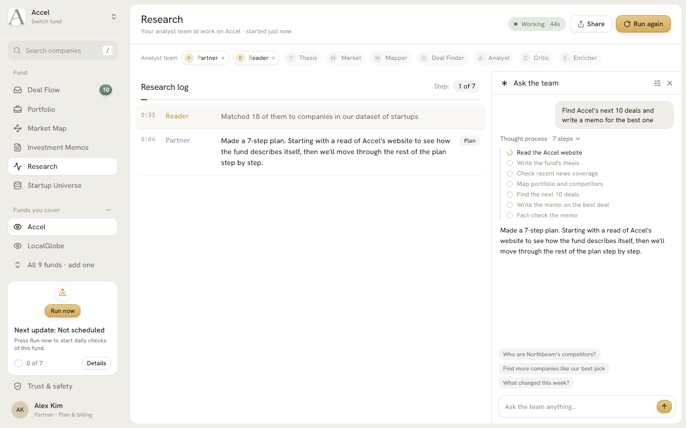
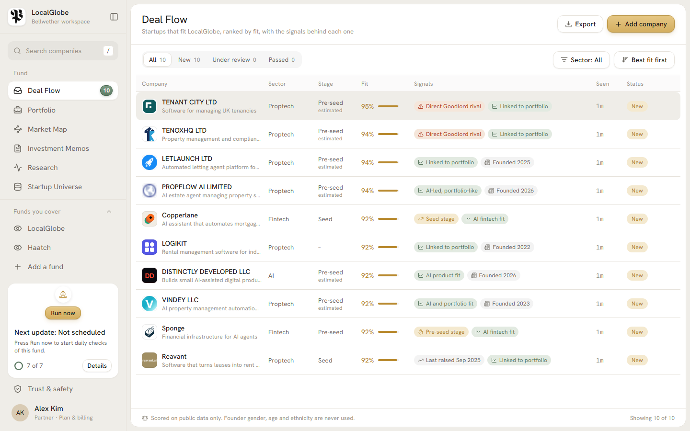
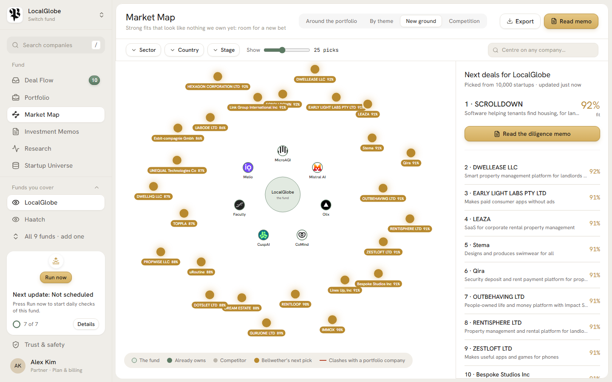
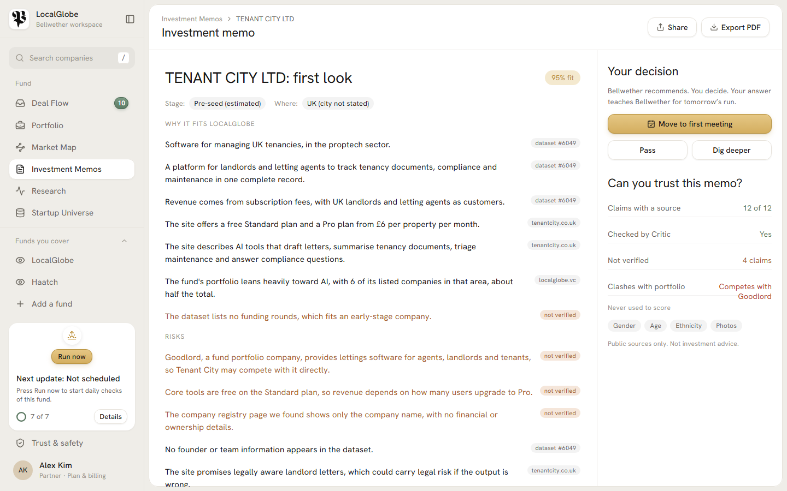

Bellwether
Accel AI Innovate London · Long-running agents
The first fully systematic VC analyst.
It never sleeps, and a human always makes the call.

01 · The problemBellwether
A seed fund sees about 3,000 startups a year and backs 10. Two analysts can't read them all.
~3,000
startups a year cross a typical seed fund's desk
2
analysts to read, map, rank and write it all up
Missed
great deals that fit the thesis, but nobody had time to look
Our customer is in this room: seed funds, angel syndicates and corporate VC teams. Databases help you search. Nobody does the work for you.
02 · The solutionBellwether
Paste a fund's website. An analyst team gets to work.
1 · Paste a URLReads the fund
Website, portfolio, team, news. Writes down the thesis.
2 · MapMaps the portfolio
What each company does and who it competes with.
3 · RankFinds next deals
Ranks 10,000 startups against the thesis and says why.
4 · WriteDrafts the memo
One page, every claim cited, checked by a Critic.
5 · RepeatKeeps watching
Re-runs on a schedule and flags what changed.
Real run on accel.com: 782 portfolio companies found, 99.9% recall against the 780 in Accel's own sitemap. 1 min 56 s, about $0.20.
03 · Long-running agentsThe theme
A team with one job each, a plan, hand-offs, and a memory.
- Plan first. The Partner writes a 7-step checklist; steps tick live.
- Parallel workers. Market and Mapper run while Thesis finishes.
- Retries and recovery. Timeout, 2 retries with backoff, then a fallback. Shown as a "recovered" event.
- Checkpoints. Every step saved to SQLite; a crashed run resumes where it stopped.
- Watch mode. Scheduled re-runs remember what they knew and report only changes.
04 · Watch it workResearch
Every step streams live, in plain English.
The Research page shows the analyst team, the plan, each hand-off and every recovery as it happens.
Ask the team a question mid-run. Press Run now to start daily checks.
SSE feed · replay mode for the stage

05 · Deal flowCompany scoring

10,000 startups, ranked against this fund.
- Model score on Modal: about 0.02 s to score all 10k, warm.
- Re-rank the top 50 with the Jev judge, then the top 10 with a plain-English "why".
- Conflict check against the fund's own portfolio.
06 · Market mapLocalGlobe
What they own. Who competes. What's next.
Already owns
Competitor
Bellwether's next pick
Click any dot for the reason in plain English. Views: around the portfolio, by theme, new ground, competition.

07 · Investment memoCited claims

One page. Every sentence has a source.
- Why it fits, risks, and questions to ask the founder.
- Critic agent checks each claim: supported or not.
- Accel run: Monday.com memo, 12 claims, all sourced (5 web, 7 dataset).
- Approve or Pass is a human decision.
08 · The model, honestlyBacktest
We hid real deals from the model and asked it to find them.
Held-out deals found in the top 5% (out of 20)
- Beats random by a wide margin: 5× on YC, 13× on EU grants.
- Keyword matching is still stronger today. A website-profile-only check ties or edges it. We say so.
- The model: bge-base embeddings of 10,000 startups on Modal CPU, plus a logistic scorer per fund. No founder traits.
- Roadmap: blend keyword and model signals, learn from Approve/Pass.
09 · Responsible by designShown in the product
It recommends and drafts. A human always makes the call.
Humans decideApprove or Pass on every pick. It never contacts founders or commits money.
No founder traitsGender, age, ethnicity and nationality are never used or inferred. Shortlist mix shown so skew is visible.
Injection guardWeb pages are untrusted data. Jev screens for hidden instructions; agents can read the web but send nothing out.
Cited claimsEvery claim links to a URL or a dataset row. The Critic and Jev flag what can't be verified.
10 · How it's builtTech stack
Small, boring, and it doesn't fall over on stage.
AgentsClaude Haiku 5.5
Partner + 8 workers, typed Pydantic outputs, one repair attempt on bad output. Jev as judge.
ModelModal
bge-base embeddings of 10,000 startups on CPU. Per-fund logistic scoring, ~0.02 s for 10k warm.
AppFastAPI + React
SQLite for runs, events, memory and checkpoints. SSE live feed. Replay mode so the demo never dies.
11 · What's nextThe ask
From hackathon to every fund's morning.
- Better model: beat the keyword baseline; learn from partner feedback.
- Read any fund site: sitemaps, CMS APIs, per-page checkpoints, parallel fetches.
- Watch mode at scale: daily diffs across every fund you cover.
Business
£1–2k
per fund per month. Cheaper than one analyst-week.
We'd love to run it on your fund. Give us your URL.
Bellwether
Team
[Team names]
The first fully systematic VC analyst. It never sleeps, and a human always makes the call.